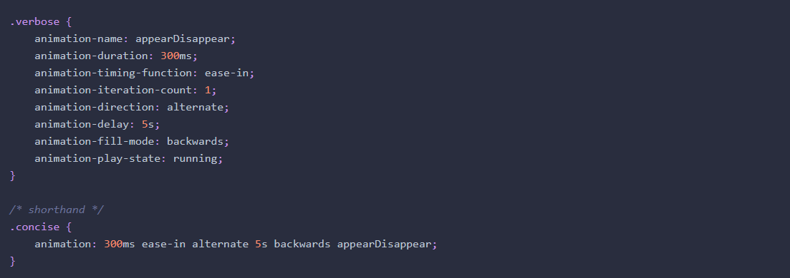

I am going to show some examples of each type of transform. Please hover
an object to see the change in action.
**Transforms don’t work on inline elements. But that’s easy enough to
fix. We’ll just add display: inline-block; to an element:
Translation functions allow you to move elements left, right, up, or down.
The scale(x,y) function scales an element by the defined factors horizontally then vertically.
Note that you shouldn’t declare a new transform: because of the cascade, a second transform would override the first. To declare multiple transformations, provide a space-separated list of transform functions. We simply add our scale to the end of that space-separated list.
It’s also worth remembering that scaling, like translation, has no impact on the document flow. This means that if you scale inline-block elements, text around it will fail to accommodate it with reflowing.
The rotate() function rotates an element around the point of origin by a specified angle value. As with scale, by default the point of origin is the element’s center. Generally, angles are declared in degrees, with positive degrees moving clockwise and negative moving counterclockwis.
The skew(x,y) function specifies a skew along the x and y axes. As you’d expect, the x specifies the skew on the x axis, and the y specifies the skew on the y axis. If the second parameter is omitted, the skew will only occur on the x axis:
As we hinted at earlier, you can control the origin from which your transforms are applied. This is done using the transform-origin property. It has the same syntax as the background-position property, and defaults to the center of the object (so that scales and rotations will be around the center of the box by default).
The order of transform functions does matter: if you rotate before translating, your translate direction will be on the rotated axis. See below examples to see the difference based on the order of transform functions.
Any property changing from one value to another for which you can find a
valid midpoint can be transitioned. For example, in transitioning from a
1px red border to a 15px blue border, we transition the color and width of
the border. The midpoint of 1px and 15px is obvious (8px), so we know that
is a transitionable property value. The midpoint between red and blue
might not seem obvious, but the browser converts named colors to their
numeric values, which have a midpoint. If the border-style were declared
as changing from solid to dashed, that would not be a transitionable
property as there is no midpoint between these key terms.
It is important to include a pre-state and a post-state. For example, to
transition from rectangular corners to rounded corners, set the original
state to border-radius: 0;.
Click here to see the list of properties that can animated.
200ms or .2s is generally considered the optimum time for a transition: anything slower will make the website seem slow, drawing generally unwanted attention to what was supposed to be a subtle effect. Anything faster may be too subtle.
The most common timing functions include the key terms ease, linear,
ease-in, ease-out, or ease-in-out. The default ease has a slow start, then
it speeds up, and ends slowly. ease-in-out is similar to ease, but
accelerates more sharply at the beginning. linear creates a transition
that animates at a constant speed. ease-in creates a transition that is
slow to start but gains speed, then stops abruptly. The opposite,
ease-out, starts at full speed, then slows progressively as it reaches the
conclusion of the transition.
In addition to the predefined timing functions and developer-defined cubic
Bézier function, you can divide the transition over equidistant steps.
With the steps function, you define the number of steps and the direction
of either start or end, where either the first step happens at the
animation start, or the last step happens at the animation end
respectively. For example, steps(5, start) would jump through the
equidistant steps of 0%, 20%, 40%, 60%, and 80%, and steps(5, end) would
jump throught the equidistant steps of 20%, 40%, 60%, 80%, and 100%.
Interestingly, a negative time delay that’s less than the duration of the entire transition will cause it to start immediately, but it will start partway through the animation. For example, if you have a delay of -500ms on a 2s transition, the transition will start a quarter of the way through, and will last 1.5 seconds. On the way back, it will jump 75% of the way through the transition, and then transition back to the default state. This might be used to create some interesting effects, so it’s worth being aware of.
CSS animations, unlike transitions, allow you to control each step of an animation via keyframes.
Fortunately, there’s a shorthand for all of these animation properties, especially since we’re still including the -webkit- prefix. The animation property takes as its value a space-separated list of values for the longhand animation-name, animation-duration, animation-timing-function, animation-delay, animation-iteration-count, animation-direction, animation-fill-mode, and animation-play-state properties:
